코드 보기
x=var("x")
f = x^2 + 3*x - 1
f.plot(-6,3)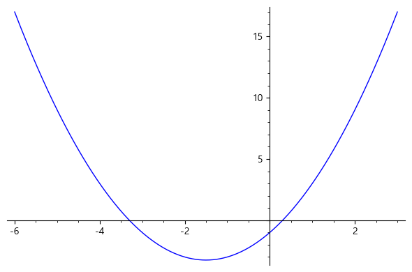
$ $
함수는 과학적 사고의 기초가 되는 수학적 개념이다. 또한 미적분학에서 다루는 기본적인 대상이 함수이다. 고등학교과정의 미분적분학에서는 다항함수, 삼각함수, 지수함수, 로그함수를 기본함수로 하여 미분과 적분에 대한 내용들을 학습하였을 것이다.
대학과정에서는 미분적분학에서 중요하게 다룰 역삼각 함수를 살펴보기 위하여 역함수의 정의와 성질들을 언급한 후 역삼각함수를 정의하고 성질들을 살펴본다.
먼저 함수의 정의와 함수를 판단하는 방법을 소개하고 함수들의 연산, 합성함수의 개념을 학습한다.
정의. 함수
집합 \(X~\)의 각 원소 \(x\)에 집합 \(Y~\)의 원소 \(y\)가 오직 하나만 대응할 때 \(X~\)에서 \(Y~\)로의 함수 (function) 또는 사상(mapping)이라고 한다. 함수의 기호는 다음과 같이 나타낸다.
\[ f:X ~\to Y \]
이때, 집합 \(X\)를 함수 \(f\)의 정의역(domain), 집합 \(Y\)를 함수 \(f\)의 공역(codomain)이라 한다. 또한 \(f(x)\)를 \(f\)에 의한 \(x\)의 함수값이라 하고 \(y=f(x)\)로 나타내며 \(Y~\)의 부분집합
\[\left\{ f(x) \mid x \in X \right\}\]
를 함수 \(f\)의 치역(range)이라 한다. 이때 \(x\) 를 독립변수(independent variable)라 하고 , \(y\) 를 종속변수(dependent variable)라 한다
음함수는 독립변수 \(x\)와 종속변수 \(y\) 사이의 관계가 \[f(x, \ y)=0 \]으로 정해지는 함수이다.
양함수 음함수와 대비하여 \(y = f(x)\) 꼴로 주어진 함수를 양함수(explicit function)라고 하지만, ‘양의 함수’(positive function)라는 다른 뜻과 혼용되기도 한다.
다음의 함수들은 음함수이다.
\(2x+y-3=0\)
\(x^2+y^2-2=0\)
\(x^3 +x^2y^2+y^5+1=0\)
위 보기 (i)을 \(y\)에 대하여 양함수의 꼴로 정리하면 \(y=-2x+3\)이다.
보기 (ii)에서는
\[x^2+y^2 -2 =0 \quad \Longrightarrow \quad y^2=2-x^2 \quad \Longrightarrow \quad y=\pm \sqrt{2-x^2} \]
이므로 \(x=1\)이면 \(y =\pm 1\)이다. 그러므로 $ y$는 \(x\)에 대한 함수가 아니다. 그러나 이 식이 두 개의 함수
\[y=\sqrt{2-x^2}, \qquad y=- \sqrt{2-x^2}\]
을 나타낸다고 생각하면 \(y\)는 \(x\)의 함수로 생각할 수 있다(이러한 함수를 다가함수라고 한다).
보기 (iii)의 경우 \(y\)에 대하여 정리하는 것이 쉽지 않지만, 부분적으로 \(y\)는 \(x\)에 의하여 정해진다.
주어진 그래프가 함수인지 아닌지를 판단하기 위해서는 정의역에 속하는 임의의 \(x\)값에서\(y\) 축에 평행 한 수직선이 그래프와 만나는 점이 한 개 , 즉 \(x\)값에 하나의\(y\) 값이 대응됨을 살펴보면 된다.
예제
다음 그래프가 함수가 되는지 판단하여라.
$ y=x ^ {2} \((2)\) x ^ {2} +y ^ {2} =r ^ {2} $
$ y ^ {2} = 4px~(p>0) \((4)\) y= $
(풀이)
<img src="./images/1장_함수Im1.png" alt="Snow" style="width:100%">
<figcaption>(1) 함수이다. $y=x ^ {2}$</figcaption> <img src="./images/1장_함수Im2.png" alt="Forest" style="width:100%">
<center>
<figcaption>(2) 함수가 아니다. $x ^ {2} +y ^ {2} =1$</figcaption> </center><img src="./images/1장_함수Im3.png" alt="Mountains" style="width:90%">
(3) 함수가 아니다.<img src="./images/1장_함수Im4.png" alt="Mountains" style="width:90%">
(4) 함수이다. ■x=var("x")
f = x^2 + 3*x - 1
f.plot(-6,3)
load('ch1.sage')
x,y=var("x y")
eq = y==x^2
bd=3
음함수그래프(eq,bd)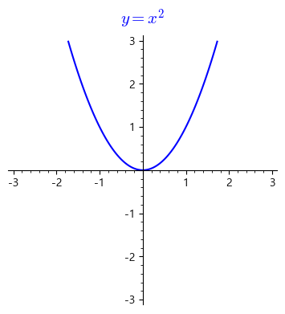
eq = x^2 + y^2 == 2
bd=2
음함수그래프(eq,bd)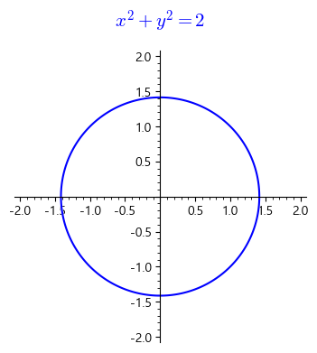
eq = y^2 == 4*x
bd=7
음함수그래프(eq,bd)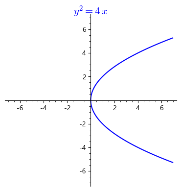
eq = y == floor(x)
bd=3
음함수그래프(eq,bd)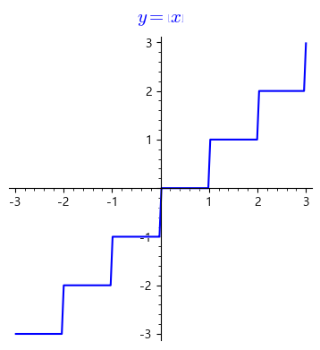
두 집합 \(X,~Y\)에 대하여 \(X\)의 각 원소를 \(Y\)의 오직 하나의 원소에 대응시키는 관계인 함수에서 다음과 같이 정의한다.
정의.
정의역 \(X\)에 포함되는 원소 \(y\)가 공역 $Y $의 원소 $ y=f(x)$에 대응할 때 $y $를 \(x\)의 상(image)이라 하며 \(x\)를 독립변수(independent variable), \(y\)를 종속변수(dependent variable)라 한다. 또한 \(x\)를 \(y\) 의 역상(preimage)이라 하며 이 역상의 집합을
\[{f^{ - 1}}(y) = \{ x \in V|f(x) = y\} \]
로 표시하고 특히 집합 \({f^{ - 1}}(0)\) 을 핵(kernel)이라 한다. 정의역 \(X\)의 모든 원소 \(x\)에 대응하는 상 전체의 집합 $R(f)={ f(x)|x X} $ 을 치역(Range)이라 한다.

정의.
일대일 함수(one-to-one function) 또는 단사함수(injection)란 함수 \(f: X ~\rightarrow Y~\)일 때 임의의 \(x _ {1} , x _ {2} \in X\)에 대하여 \(x _ {1} \neq x _ {2}\)이면 \(f(x _ {1} ) \neq f(x _ {2} )\)가 성립하는 함수이다.
공역과 치역이 일치하는 함수(onto, 대응함수 correspondence function) 또는 전사함수(surjection)란 함수 \(f: X ~\rightarrow Y\)에 대하여 공역과 치역이 일치할 때 즉, \(Y=f(X)\)가 성립하는 함수이다.
일대일 대응함수(one-to-one correspondence) 또는 전단사함수(bijection)란 함수 \(f\)가 단사이고 전사인 함수이다.
항등함수(identity function)란 함수 \(f\)가 모든 \(x \in X~\)에 대하여 \(f(x)=x\)가 성립하는 함수이다.
▪ 수평선 판정법
함수가 일대일 함수가 되기 위해서는 그래프가 모든 수평선과 두 번 이상 만나지 않아야 한다.
정의. 함수의 연산
함수 \(f\)와 \(g\)의 정의역이 각각 \(X _ {1}, ~X _ {2} \subset X\) 라고 할 때 \(f+g\), \(f-g\), \(f g\)를 다음과 같이 정의한다. 모든 \(x \in X _ {1} \cap X _ {2}\)에 대하여
\((f+g) (x)= f(x) + g(x)\)이고
\((f-g) (x)=f(x)-g(x)\)이며
\((f g )(x)=f(x) g(x)\)이다.
또한, \(g(x) \neq 0\)인 모든 \(x \in X _ {1} \cap X _ {2}\)에 대하여
예제 2
함수 \(f(x) = x-2\)와 \(g(x)= \sqrt { x-3}\)에 대하여 \(f+g\), \(f g\), \(\dfrac{ f}{ g}\)를 구하여라.
풀이)
함수의 연산 정의 1.3의 (1),(3),(4)를 이용하면
\(\qquad (f+g) (x)=f(x)+g(x)=(x-2)+ \sqrt { x-3}\)(단, \(x \geq 3\))이고
\(\qquad (f g )(x)=f(x) g(x)= (x-2) \sqrt { x-3}\) (단, \(x \geq 3\))이며
\(\qquad \left (\dfrac{ f}{g }\right )(x)= \dfrac{ f(x)}{g(x) }= \dfrac{ x-2}{ \sqrt { x-3} }\) (단, \(x > 3\))이다.
print(floor(.99),floor(1.),floor(1.1))0 1 1다음과 같이 정의된 함수 \(f(x)\)를 간단히 하여 보자.
\[ f(x)=\lim_{n \to \infty} \frac{x^{2n+1}+ax+b}{1+x^{2n}} \]
\(|x|<1\)이면 \(f(x)=ax+b\),
\(x=1\)이면 \(\displaystyle f(1)=\frac{1+a+b}{2},\)
\(x=-1\)이면 \(\displaystyle f(1)=\frac{-1-a+b}{2},\)
\(|x|>1\)이면
\[ f(x)=\lim_{n \to \infty} \frac{x+\frac{a}{x^{xn-1}}+\frac{b}{x^{2n}}} {1+\frac{1}{x^{2n}}} =x. \]
이 때 이를 간단하게
\[ f(x)=\left\{ \begin{array}{ll} ax+b, & \text{if $|x|<1$;} \\ \frac{1+a+b}{2}, & \text{if $x=1$;} \\ \frac{-1-a+b}{2}, & \text{if $x=-1$;} \\ x, & \text{if $|x|>1$.} \end{array} \right. \]
로 표기하고 이런함수를 구간으로 정의된 함수(piecewise defined function)라한다.
reset()
x,a,b=var('x,a,b')
g = piecewise([[(-oo, -1), x], [[-1,-1], (a+b+1)/2], [(-1, 1), a*x+b],[[1,1],(a+b+1)/2],[(1,oo),x]])
def f(x):
n=var('n')
fn=(x^(2*n+1)+ a*x+b)/(x^(2*n) + 1)
return limit(fn, n=infinity)
show(f(1/2)," = ",g(1/2))
show(f(2)," = ",g(2))f1(x) = -x
f2(x) = x^2
f3(x) = 3
f = piecewise([[(-5, 0), f1], [(0, 2), f2], [(2, 5), f3]])
plot(f,(x,-4,4))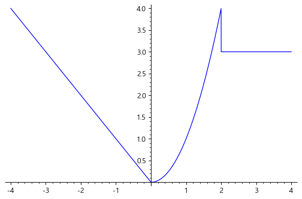
정의.
함수 \(f\)와 \(g\)의 정의역이 각각 \(X _ {1,} ~X _ {2} \subset X ~\)라고 할 때 \(x \in X _ {2}\), \(g(x) \in X _ {1}\)에 대하여
\((f \circ g)(x)=f(g(x))\)인 함수를 합성함수 \(f \circ g\)라 한다.

예제
함수 \(f(x) =x ^ {2} +3\)이고 \(g(x)= \sqrt { x-4}\)일 때 합성함수 \(f \circ g\)와 \(g \circ f\)를 구하여라.
(풀이)
합성함수 정의를 이용하여 두 합성함수를 구해보면
\((f \circ g) (x) =f(g(x))=f( \sqrt { x-4})= (\sqrt { x-4}) ^ {2} +3=x-1\)(단, \(x \geq 4\))이고
\((g \circ f)(x)=g(f(x))=g(x ^ {2} +3 )= \sqrt { x ^ {2} -1}\)(단, \(|x| \geq 1\))임을 알 수 있다.■
위의 예제에서 알 수 있듯이 합성함수는 교환법칙이 성립하지 않는다.
예제
해안선과 평행하게 10 km/h의 속도로 움직이는 배가 있다. 이 배는 해안으로부터 2 km 떨어져 있고 정오에 등대를 지나갔다. 배가 정오에서부터 이동한 거리 s에 대한 배와 등대 사이 거리 d = f(s) 함수를 구하고, 정오로부터 시간 t에 대한 s의 함수 s = g(t)를 구한 후 f ∘ g 함수의 의미를 말하여라.
(풀이)
\(d^{ 2} = s^{2} + 2^{2} = s^{2} + 4 \Leftrightarrow d = f(s) = \sqrt{s^{2} + 4}\)이고 s = g(t) = 10t이다.
또 \((f \circ g)(t) = f(g(t)) = \sqrt{100 t^{ 2} + 4}\)이다.
f ∘ g 함수의 의미는 배와 등대 사이 거리를 시간에 관한 함수로 표현한 것이다. ■
01. 두 함수 \(f(x) = 1\), \(g(x) = 1 + \sqrt{x}\)에 대하여 \(f + g\), \(fg\), \(\frac{f}{g}\)를 구하고, 각 함수의 정의역을 구하여라.
02. 두 함수 \(f(x) = \sqrt{x^{2} - 1}\), \(g(x) = \sqrt{x^{2} - 2}\)에 대하여 \(f + g\), \(fg\), \(\frac{f}{g}\)를 구하고, 각 함수의 정의역을 구하여라.
03. 함수 \(f(x) = \sqrt{x + 1}\), \(g(x) = \frac{1}{x}\)의 합성함수 \(f \circ g\)와 \(g \circ f\)를 구하고, 각 함수의 정의역을 구하여라.
04. 함수 \(f(x) = x^{5}\), \(g(x) = \sqrt{x - 5}\)의 합성함수 \(f \circ g\)와 \(g \circ f\)를 구하고, 각 함수의 정의역을 구하여라.
05. 함수 \(f(x) = x^{2} + 1\), \(g(x) = cosx\)의 합성함수 \(f \circ g\)와 \(g \circ f\)를 구하고, 각 함수의 정의역을 구하여라.
06. 함수 \(F(x) = \cos^{5}x\)를 두 함수의 합성함수 형태로 표현하여라.
07. 함수 \(F(x) = (x^{3} + 2x - 1)^{7}\)을 두 함수의 합성함수 형태로 표현하여라.
08. 함수 \(F(x) = \sqrt{\mid x^{3} - 1 \mid + 3}\)을 두 함수의 합성함수 형태로 표현하여라.
09. 함수 \(F(x) = \frac{\sqrt[4]{x}}{1 + \sqrt[4]{x}}\)를 두 함수의 합성함수 형태로 표현하여라.
10. 함수 \(F(x) = \sec(x^{2})\tan(x^{2})\)을 두 함수의 합성함수 형태로 표현하여라.
11. 두 함수 \(f(x) = m_{1}x + b_{1}\), \(g(x) = m_{2}x + b_{2}\)가 있다. \(g \circ f\)함수의\(y\) 절편을 구하여라.
12. 함수 \(g(x) = 3x + 2\), \(h(x) = 9x^{2} + 6x + 1\)이고 \(f \circ g = h\)를 만족하는 함수 \(f\)를 구하여라.
13. 함수 \(g(x) = 2x + 2\), \(h(x) = 4x^{2} + 8x + 12\), \(g \circ f = h\)를 만족하는 함수 \(f\)를 구하여라.
14. 함수 \(f\)가 우함수이고 \(F(x) = (g \circ f)(x)\)일 때 \(F\)는 우함수인지 기함수인지를 판단하여라.
15. 해비사이드 함수Heaviside function \(H\)는 \(H(t) = \left\{ \begin{matrix} 0 & ,\ t\langle 0 \\ 1 & ,\ t \geq 0 \\ \end{matrix} \right.\ \)과 같이 정의된다. \(t = 3\)초일 때 스위치를 켰고 그 순간 허용전압 \(V(t)\)가 \(360\)볼트가 되었다. 이때 \(V(t)\)를 \(H(t)\)로 나타내어라.
이 절에서는 미분적분학에서 많이 다루어지는 초월함수에 대해 살펴보자. 주기함수인 삼각함수는 전자파나 파동과 같은 현상에서 자주 나타나는 함수이고 박테리아의 증식과 같은 현상은 지수함수와 관련 있다. 이와 같은 초월함수의 정의와 성질들은 고등학교 과정에서 많은 부분 학습되어 있을 것이다. 이 절에서는 초월함수의 기본 정의와 성질을 바탕으로 하여 삼각함수, 지수함수와 로그함수 정의와 성질, 그래프 등을 간단히 살펴보고 실생활에서 활용되는 다양한 예를 소개한다. 여기서 소개하는 실생활 활용은 전문적인 분야를 깊이 있게 분석하기 보다는 여러 함수들이 다양한 분야에 적용된다는 정도만 알면 된다.
대수함수(algebraic function)는 다항방정식의 근이 되는 함수로서 흔히 덧셈, 뺄셈, 곱셈, 나눗셈, 제곱근 연산과 같은 대수적 연산을 이용하여 만들어질 수 있는 함수이다. #### 초월함수 대수함수가 아닌 해석함수를 초월함수라고 하며 이는 대수적 연산을 “초월한다.”는 뜻에서 붙여진 이름이다. 삼각함수, 지수함수, 로그함수 등이 대표적인 초월함수이다.
함수 \(y= y(x)\)가 대수함수라는 것은 변수 \(x\)와 \(y\)가 대수적으로 종속이라는 뜻이다. 즉, 영이 아닌 다항식 \(P(x, \ y)\)에 대하여
\[ P(x,y(x)) = 0\]
이라는 뜻이다. 이때 다항식 \(P\)를 \(y\)에 대한 내림차순으로 정리하면 다항식 \(p_0(x), p_1(x), \dots, p_n(x)\)에 대하여
\[p_n(x) y^n + p_{n-1}(x) y^{n-1} + \cdots + p_0(x)=0\]
과 같이 쓸 수 있다. 사용하는 수의 체계에 따라 다항식의 계수들을 한정할 수 있는데, 보통 유리수체를 사용한다.
대수함수는 다항식을 가지고 시작하여 유한번의 덧셈, 뺄셈, 곱셈, 나눗셈, 제곱근 연산으로 얻어지는 함수를 모두 포함한다. 예를 들어, 다음 함수들은 모두 대수함수이다. 1)2)
\[\begin{align} f(x)&= x^5-x^3+2\\ f(x)&= \sqrt{x^3-1}\\ f(x)&= \frac{x^3+x-1}{3\sqrt{x}+x}\\ f(x)&= x+(x^2+1)^{\frac{3}{4}} \end{align} \]
하지만 유한번의 대수적 연산에 의해 만들어질 수 없는 대수함수들도 존재한다.
해석함수 중에서 대수함수가 아닌 함수를 초월함수라고 한다. 따라서 초월함수는 유한번의 대수적 연산(덧셈, 뺄셈, 곱셈, 나눗셈, 제곱근 연산)에 의해 만들어질 수 없는 함수이다.
대표적인 초월함수로는 지수함수, 로그함수, 삼각함수 등이 있다. 예를 들어, 다음 함수는 모두 초월함수이다. 2)
\[5^x, \quad x^e \quad x^x, \quad \log_{10} x, \quad \tan x\]
(주의) 초월함수들의 합성함수가 대수함수가 될 수도 있다.
우리가 일상생활에서 많이 접하는 것 중의 하나가 파동이다. 예를 들어 라디오 방속 국에서 음악을 전자파 형태로 보내면 라디오 수신기가 이 전자파를 해독해서 스피커 안에 있는 얇은 막을 진동시킨다. 이 진동이 공기 속에서 압력파를 만들어 우리 귀에 전해지면 우리는 라디오를 듣게 되는 것이다. 이 파동은 주기적이다. 즉, 같은 형태의 파동이 계속 되풀이된다. 이와 같은 현상을 수학적으로는 주기함수로 나타낼 수 있다. 주기함수중에서 가장 잘 알려진 것이 삼각함수이다.
정의.
함수 \(f\)의 정의역에 속하는 모든 \(x\)와 \(x+T\)에 대해서, \[ f(x+T)=f(x)\] 이면, 함수 \(f\)를 주기가 \(T\)인 주기함수라고 한다. 위 식을 만족하는 가장 작은 수 \(T>0\)를 기본주기라고 한다.
각 \(C\)가 직각인 삼각형 \(ABC\)에서, 각 \(A\), \(B\), \(C\)의 대변(마주보는 변)의 길이를 \(a,~b,~h\)라고 할 때, 사인(sine), 코사인(cosine), 탄젠트(tangent), 코시컨트(cosecant), 시컨트(secant), 코탄젠트(cotangent)의 정의는 다음과 같다.

reset(); load('ch1.sage')
f(x)=sin(x)
삼각함수그래프(f)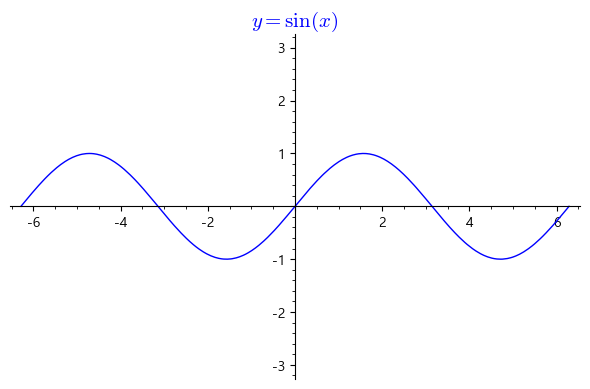
f.plot(-pi*2,pi*2)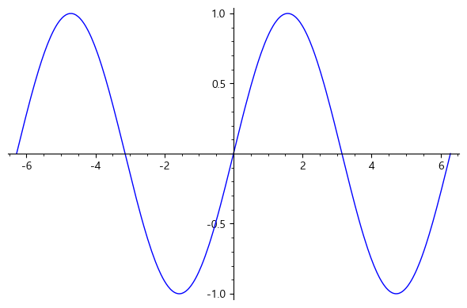
f(x)=cos(x)
삼각함수그래프(f)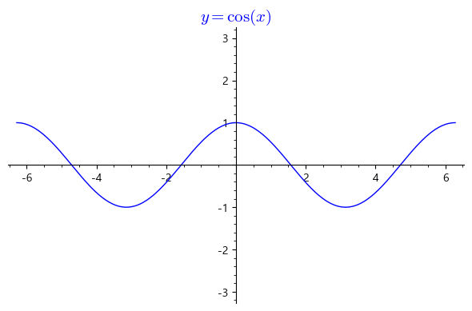
f(x)=tan(x)
삼각함수그래프(f)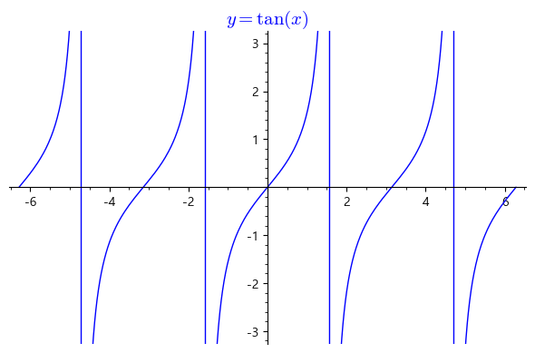
f(x)=sec(x)
삼각함수그래프(f)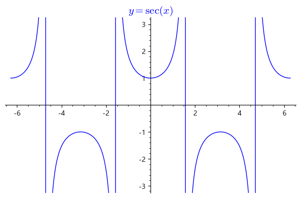
f(x)=cot(x)
삼각함수그래프(f)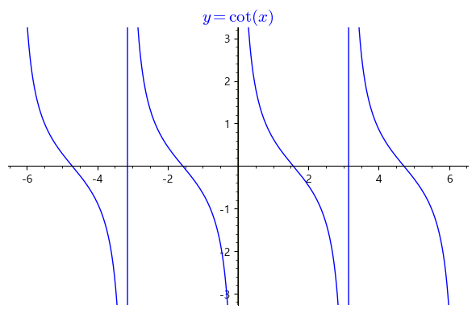
f(x)=sin(x)
f.plot(-6,6,ymin=-3,ymax=3)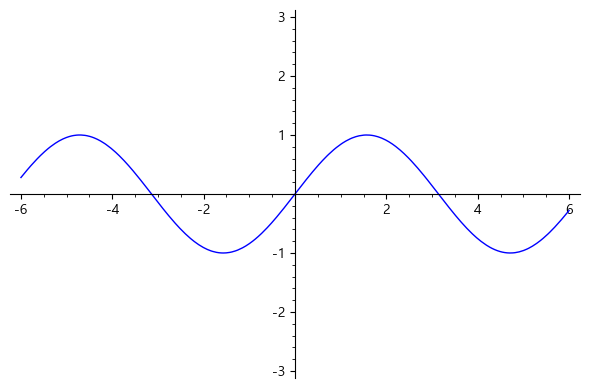


삼각항등식(trigonometric identity)은 삼각함수에 관한 방정식으로서 양변이 모든 각에 대해 항상 성립하는 항등식을 뜻한다. 가장 대표적인 삼각항등식은 피타고라스 정리를 응용한 것인데, 위의 그림 2에서 피타고라스 정리를 응용하면 다음을 얻는다.
\[x^2+y^2=r^2\]
이 식의 양변을 \(r^2\)으로 나누면 사인과 코사인의 정의를 이용하여 다음을 얻게 된다.
\[\begin{align} \sin^2 \theta + \cos^2 \theta =1 \qquad (1)\end{align}\]
다시 이 식을 각각 \(\cos^2 \theta, \ \sin^2 \theta\)로 나누면 다음을 얻는다.
\[\begin{align} \tan^2 \theta +1 =\sec^2 \theta, \ \ \ \ 1+ \cot^2 \theta = \csc^2 \theta \qquad (2)\end{align}\]
한편, 점 \((x, \ y)\)가 단위원 위의 점이면, \((-x, \ y)\), \((-x, \ -y)\), \((x, \ -y)\)도 단위원 위의 점이다. 이 네 점은 각 변이 좌표축과 평행한 직사각형의 네 꼭짓점이다. 특히, 이 꼭짓점의 \(x\)좌표와 \(y\)좌표는 그 대응하는 각의 코사인과 사인이다. 따라서 다음 등식을 얻게 된다. 올싸탄코
\[\begin{align} \sin (\pi-\theta)&=\sin \theta,\ \ \sin (\pi+\theta)=-\sin \theta,\ \ \sin (-\theta)=-\sin \theta\\ \cos (\pi-\theta)&=-\cos \theta,\ \ \cos (\pi+\theta)=-\cos \theta,\ \ \cos (-\theta)=\cos \theta\\ \tan (\pi-\theta)&=-\tan \theta,\ \ \tan (\pi+\theta)=\tan \theta,\ \ \tan (-\theta)=-\tan \theta \end{align}\]
보각관계란 두 각을 합쳐서 \(\pi\)가 되는 관계를 의미한다.
여각관계란 두 각의 합이 \(\dfrac{\pi}{2}\)가 되는 관계를 의미한다. 예를 들어\(\dfrac{\pi}{6}\)의 여각은 \(\dfrac{2\pi}{6}\)이고, \(\dfrac{4\pi}{6}\)의 여각은 \(\dfrac{-\pi}{6}\)이다. 임의의 각 \(\theta\)에 대하여도
\[ \sin(\theta)=\cos\left(\dfrac{\pi}{2}-\theta\right),~~~~\cos(\theta)=\sin\left(\dfrac{\pi}{2}-\theta\right) \]
가 항상 성립한다.
지수함수란 밑과 지수의 거듭제곱 꼴의 함수로, \(1\)이 아닌 양수 \(a\)에 대하여 \[f(x)=a^x\]꼴로 나타나는 함수를\(a\)를 밑으로 하는 지수함수라고 한다.
정의.
\(1\)이 아닌 양수 \(a\)와 임의의 실수 \(x\)에 대하여 \[f(x)=a^x\] 꼴로 나타나는 함수를 \(a\)를 밑으로 하는 지수함수라고 한다.
특히, 밑 \(a\)의 값이 \(e \approx 2.7182818\cdots\)인 지수함수 \(f(x) = e^{x}\)을 자연지수함수라 한다.
하나의 세포가 분열을 시작하면 기하급수적으로 증가한다. 따라서 시간 \(x\)에 대한 하나의 세포가 분열했을 때 세포의 수는 \(y = 2^{x}\)이라는 지수함수로 분석할 수 있다.
한 옥타브 높은 음은 길이가 절반으로 줄어든다. 현의 길이는 건반 하나하나마다 일정한 비율로 12분의 1씩 줄어든다. 낮은 도에서 높은 도까지 총 13개의 건반 음에 대응하는 현의 길이는 바흐가 처음으로 작품에 적용한 평균율을 따른다. 이를 일반화하면, \(x\)개의 건반만큼 음이 올라가면 \(y = (\frac{1}{2})^{\frac{x}{12}}\)의 식이 성립한다.
방사성 붕괴는 불안정한 원자핵이 이온화와 방사선 방출을 통해 에너지를 잃고 안정된 상태로 가는 과정이다. 이때 방사능 물질은 지수적으로 붕괴한다. 탄소 연대 측정법은 고고학 유물의 연대를 추정하는 데 많이 사용되는 방법으로 대기 중에 포함된 탄소-14의 비율은 일정하고, 식물은 광합성, 동물은 호흡을 통해서 대기 중의 탄소를 주고 받기 때문에 살아 있는 동식물이 가지고 있는 탄소-14의 비율은 대기 중의 탄소-14의 비율과 일치한다. 동식물이 죽은 후 외부와 격리된 상태에서는 탄소 동위원소 중 탄소-14만이 방사성 붕괴를 통해 시간에 따라 감소하므로 방사성 동위원소 탄소-14의 비율을 측정함으로써 유물의 경과시간을 추정할 수 있다.
\(\qquad\qquad N(t) = N_{0}(\frac{1}{2})^{\frac{t}{t_{1/2}}}\), \(N(t) = N_{0}e^{- \frac{t}{\tau}}\), \(N(t) = N_{0}e^{- \lambda t}\)
• \(N_{0}\) : 붕괴를 거칠 물질의 초깃값
• \(N(t)\): 시간\(t\) 경과 후 붕괴되지 않고 남아있는 물질의 양
• \(t_{1/2}\) : 붕괴 중인 양의 반감기
• \(\tau\) : 붕괴 중인 물질의 평균 수명시간
• \(\lambda\) : 붕괴 중인 물질의 붕괴 상수
\(x\)의 값이 증가하면 \(a^x\)의 값은 감소하며, 지수함수 \(y=a^x\)의 그래프는 다음 그림과 같다.

reset(); load('ch1.sage')
A=[1/2,1/4,1/8,1/16]
logPlot(A)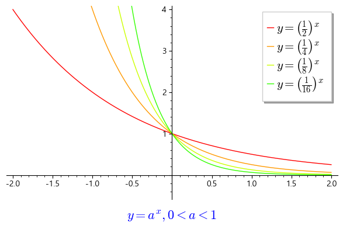
\(x\)의 값이 증가하면 \(a^x\)의 값은 증가하며 이때 지수함수 \(y=a^x\)의 그래프는 다음 그림과 같다.

A=[2,4,8,16]
logPlot(A)\(a > 0\)이고, \(a \ne 1\)일 때, 지수함수 \(f(x)=a^x\)는 실수 전체의 집합 \(\mathbb R\)에서 정의된 연속함수로 치역은 양의 실수 전체의 집합이다.
지수함수 \(f(x)=a^x\)에서 \(a=1\)이면 \(f(x)\)는 항등적으로 \(1\)인 상수함수이므로, 지수함수에서는 \(a \ne 1\)이라고 가정한다.
\(a\)가 1이 아닌 양수일 때, 지수함수 \(y=a^x\)에 대해 다음이 성립한다.
또, 지수함수는 다음의 지수법칙을 만족한다.
\(1\)이 아닌 두 양수 \(a\), \(b\)에 대하여
한편 지수함수에 대해 다음 정리가 성립한다.
정리.
함수 \(f: \mathbb R \to \mathbb R\)가 다음의 세 조건을 만족하면 \(f(x)\)는 지수함수이다.
\(1\)이 아닌 양수 \(a\)에 대하여
\[y=\log_a x\]
꼴로 나타나는 함수를 \(a\)를 밑으로 하는 로그함수라고 한다.
로그함수는 빛의 속도를 나타내거나, 지구와 다른 행성간의 거리와 같이 큰 수나 또는 미생물의 크기, 나노단위의 세포와 같은 작은 수를 다룰 때 유용하게 이용된다.
\(1\)이 아닌 양수 \(a\)에 대하여 지수함수 \(y=a^x\)은 실수 전체의 집합에서 양의 실수 전체의 집합으로의 일대일 대응이므로 역함수를 가진다. 이때 로그의 정의에 의하여
\[y=a^x \quad \iff \quad x=\log_a y\] 이다. 지수함수 \(y=a^x\)의 역함수는 (\(x\)와 \(y\)를 바꾸어 쓰면) \[y = \log_a x \] 이다. 이 함수를 밑이 \(a\)인 로그함수라고 한다.
밑이 \(10\)인 로그함수는 상용로그함수라 하고, 이때 밑 \(10\)은 보통 생략하여 \(y=\log x\)와 같이 나타낸다.
또 밑이 자연상수 \(e\)인 로그함수를 자연로그함수라 하고, 이것은 \(y=\ln x\)와 같이 나타낸다.
\(x\)의 값이 증가하면 \(\log_a x\)의 값은 감소하며, \(a=\frac{1} {2}\), \(a=\frac{1} {3}\)일 때의 로그함수 \(y=\log_a x\)의 그래프는 다음 그림과 같다.

위의 그림에서 알 수 있듯이 \(0<a<1\)일 때, 로그함수 \(y=\log_a x\)의 그래프는
\(0<x<1\)에서는 \(a\)의 값이 작을수록 \(y\)축에 가깝고,
\(x>1\)에서는 \(a\)의 값이 작을수록 \(x\)축에 가깝다.
A=[1/2,1/4,1/8,1/16]
logPlot(A)\(x\)의 값이 증가하면 \(\log_a x\)의 값은 증가하며, \(a=2\), \(a=3\)일 때의 로그함수 \(y=\log_a x\)의 그래프는 다음 그림과 같다.

위의 그림에서 알 수 있듯이 \(a>1\)일 때, 로그함수 \(y=\log_a x\)의 그래프는
\(0<x<1\)에서는 \(a\)의 값이 클수록 \(y\)축에 가깝고,
\(x>1\)에서는 \(a\)의 값이 클수록 \(x\)축에 가깝다.
A=[2,4,8,16]
logPlot(A)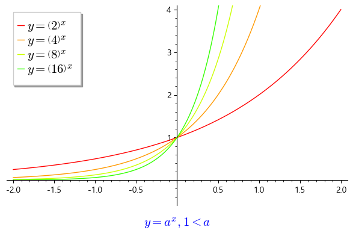
\(a>0\), \(a\neq 1\)일 때, 로그함수 \(f(x)=\log_a x\)는 양의 실수 전체의 집합에서 정의된 연속함수로 치역은 실수 전체의 집합이다.
\(a\)가 \(1\)이 아닌 양수일 때, 로그함수 \(y=\log_a x\)에 대해 다음이 성립한다.
정의역은 양의 실수 전체의 집합이고, 치역은 실수 전체의 집합이다.
\(0 < a <1\)일 때 \(y\)는 감소함수이고, \(a > 1\)이면 \(y\)는 증가함수다.
그래프는 점 \((1, 0)\)을 지나고, \(y\)축을 점근선으로 한다.
또, 로그함수 \(f(x)=\log_a x\) \((a>0\), \(a\neq 1)\)는 다음을 만족한다.
\(f(1)=0\), \(f(a)=1\)
\(f(pq)=f(p)+f(q)\)
\(f(\frac{p}{q})=f(p)-f(q)\)
\(f(p^n)=nf(p)\)(단,\(n\)은 실수)
지수함수와 로그함수는 서로 역함수 관계이다. 즉, \(y=\log_a x\) \((a>0\), \(a\neq 1)\)는 \(y = a^x\)의 역함수이므로 로그함수의 그래프와 지수함수의 그래프는 직선 \(y=x\)에 대해여 대칭이다.

\(0<a<1\) 일 때의 관계 그래프

\(a>1\) 일 때의 관계 그래프
\(y=a^x\cdot (a>1)\)이 \(x>0\)에서 급격히 증가하므로 그 역함수인 \(y=\log_a x\)는 \(x>1\)에서 느리게 증가한다.
정리.
실수 \(x\)에 대해, 다음이 성립한다. \[{e^{ix}} = \cos x + i\sin x\] 여기서, \(e\)는 자연로그의 밑인 상수이고, \(i\)는 제곱하여 \(-1\)이 되는(\({i^2} = - 1\)) 허수단위이다.

증명) 이의 증명은 다음과 같다.
\[\begin{align*} f(x) &= {e^{ - ix}}(\cos y + i\sin x) \\ \Rightarrow f'(x) &= - i{e^{ - ix}}(\cos x + i\sin x) + {e^{ - ix}}( - \sin x + i\cos x) \\ &= {e^{ - ix}}( - i\cos x + \sin x - \sin x + i\cos x) = 0 \\ \end{align*}\]
가 되어서 \(f(x)=c\)가 되고 상수 \(c\)를 \(x = 0\)을 대입하여 구하면 \(c=1\)이 된다. 그러므로 ${e^{ ix}}=(x + ix) $임을 알수 있다. ■
오일러 공식 \(e^{ix} = \cos x + i \sin x\)를 이용하면 \(\log (-1)\)이 무엇인지 알 수 있다. 정수를 \(n\)으로 나타낼 때 \(x=\pi+2n\pi = (2n+1)\pi\)를 대입하면
\[e^{i(\pi+2n\pi)}=\cos(\pi+2n\pi) + i\sin(\pi+2n\pi)=-1\]
이므로, 양변에 로그를 취하면 다음과 같이 로그의 결과값으로 복소수가 튀어 나온다.
\[\log (-1) = (2n+1)i\pi\]
오일러 공식의 \(x\)값에 적당한 다른 수를 대입함으로써 허수에 대한 로그값도 구할 수 있다. \(x = \dfrac\pi2+2n\pi = {\left(\dfrac12+2n\right)}\pi\) 를 대입하면
\[e^{i{\left(\frac\pi2+2n\pi\right)}} = \cos{\left(\dfrac\pi2+2n\pi\right)}+i\sin{\left(\dfrac\pi2+2n\pi\right)}=i\]
이므로, 양변에 로그를 취하면 \[\log (i) = {\left(\dfrac12+2n\right)}i\pi\] 위 관계식에서 \(n=0\)인 경우, \(\log\)를 \(\rm Log\)로 나타낸다.
\(z=x+iy\)의 자연로그(natural logarithm)는 \(\ln z\)로 표시하고 지수함수의 역함수로 정의한다.
\[\begin{align} &~ \ln z=\ln r+i\theta \\ &~ \left( r=\left| z \right|>0,\theta =\arg z \right) \\ \end{align}\]
이때, 실미적분학과 다른 점을 발견할 수 있다. \(z\)의 편각은 $2\(의 임의의 정수배를 더한 값들로 결정되므로, 복소자연로그\)z ( z )\(는 무한히 많은 값을 갖는다.\)z$에 상응하는 \(\ln z\)의 값을 \(\operatorname{Ln}z\)로 표기하고, \(\ln z\)의 주값(principal value)이라 부른다. 따라서,
\[\operatorname{Ln}z=\ln \left| z \right|+i \operatorname{Arg}z\]
이다. \(\operatorname{Arg} z\)의 다른 값들은 $2$의 정수배만큼 다르므로 \(\ln z\)의 다른 값들은
\[\ln z=\operatorname{Ln}z\pm 2n\pi i\]
이 된다.
예제
일러 정리를 이용하여 삼각함수의 덧셈정리를 증명하여라. \[\begin{gathered} \sin \left( {x \pm y} \right) = \sin x\cos y \pm \cos x\sin y, \\ \cos \left( {x \pm y} \right) = \cos x\cos y \mp \sin x\sin y \\ \end{gathered} \] 증명의 힌트) \({e^{ix}}{e^{iy}} = {e^{i(x + y)}}\)
정의역이 \(X\)이고 치역이 \(Y\)인 함수 \(y=f(x)\)에 대하여,
정의역을 \(Y\)로, 치역을 \(X\)로 가지며 \(x=g(y)\)를 만족하는 함수 \(g\)를 ’\(f\)의 역함수’라고 하며, 일반적으로 \(f^{-1}\)로 나타낸다.
임의의 함수와 그 함수 자신의 역함수를 합성하면 항등함수가 된다.
주어진 함수가 역함수를 가지기 위해서는 반드시 단사함수여야 한다.
예제
함수 \(f(x)=x^2\)은 정의역에 따라 역함수가 존재할 수도 있고, 존재하지 않을 수도 있다.
만약 정의역이 \(0\)이 아닌 실수라면, \(y=x^2\)에 대응하는 정의역 내의 값은 \(\pm x\)로 두 개가 존재하므로 역함수가 존재하지 않는다.
반면, 정의역을 양의 실수로 가정한다면 각 함숫값에 대응하는 정의역 내의 값은 양수 하나만 존재하므로 이 함수는 단사함수이며 동시에 역함수가 존재하게 된다.
예제
\(y= 2x + 1\)의 역함수를 구하여라.
풀이) 역함수는 \(y=x\)에 대칭이므로 \(x\)와 \(y\)를 바꾸면 \(x=2y+1\)이 되고 구하고자 하는 역함수는 \(y= \dfrac{ x-1}{2 }\)이다. ■
정리.
모든 실수 \(x\)에 대하여 \(f'(x) >0\)(또는 \(f ' (x)<0\))이면 함수 \(f\)는 역함수를 가진다.
증명) 아직 미분부분이 나오지 않았지만 고등학교 때 선수 학습으로 미분값이 항상 양인(항상 음인)함수는 증가함수(감소함수)임을 알고 있을 것이다. ■
예제
함수 \(f(x)=x ^ {7} + 5 x ^ {3} + 2x +2\)의 역함수가 존재함을 보이고 \(f ^ {-1} (2)\)와 \(f ^ {-1} (10)\)을 구하여라.
풀이) \(f'(x) = 7x ^ {6} +15x ^ {2} +2>0\)이므로 역함수가 존재하고 함수와 역함수의 관계에 의해 역함수를 구하지 않고 역함수의 함수 값을 구할 수 있다. 즉, \(f ^ {-1}(2)=x\)로 두면 \(f(x)=2\)이고 \(f(0)=2\)이므로 \(f ^ {-1} (2)=0\)이다. 같은 방법으로 \(f ^ {-1} (10)=1\)임을 알 수 있다. ■
var('x y')
sol=solve(2. ==x^7 + 5*x^3 +2*x +2,x, algorithm='sympy',domain='real')
sol[0]x == 0reset()
import warnings
from sympy.utilities.exceptions import SymPyDeprecationWarning
warnings.filterwarnings("ignore", category=SymPyDeprecationWarning)
warnings.filterwarnings("ignore", category=DeprecationWarning)
var('x y')
sol=solve(10. ==x^7 + 5*x^3 +2*x +2,x, algorithm='sympy',domain='real')
sol[0]x == 1.00000000000000var('x y')
sol=solve(23. ==x^7 + 5*x^3 +2*x +2,x, algorithm='sympy',domain='real')
sol[0]x == 1.31811533397231var('x,y')
f(x)=x^7 + 5*x^3 +2*x +2
df=diff(f(x),x)
p1=plot(f(x), x, -2.5,2, color='blue');
p2 = text("$y=%s$"%latex(f(x)), (-1.8,10), fontsize=15, color='blue')
p3 = text("$y'=%s$"%latex(diff(f(x),x)), (-1.8,5), fontsize=15, color='red')
p4 = plot(df, x, -2.5,2, color='red');
show(p1+p2+p3+p4, ymax=20, ymin=-15)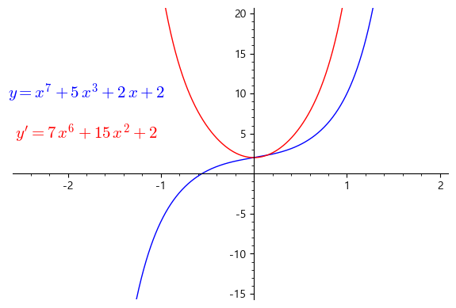
만약 함수 \(f: X \rightarrow Y\)의 역함수가 존재한다면
\(\qquad\)모든\(x \in X\)에 대하여 \(\qquad\) \(f^{-1}(f(x))=x\)
가 성립한다. 이를 함수의 합성을 이용하여 \[f^{-1} \circ f = I\]로 나타낼 수 있다. 단, \(I\)는 집합 \(X\)에서의 항등함수를 의미한다. 만약 합성을 함수들의 곱이라고 생각한다면, 역함수는 함수에 대한 곱의 역원이라고 말할 수 있다. 이는 \(f^{-1}\)라는 표기의 유래를 설명해준다.
역함수의 표기법에서 위 첨자 \(-1\)이 종종 혼동을 일으키기도 한다. 이는 특히 삼각함수나 쌍곡함수 등을 다룰 때 부각된다. \(f^{-1}(x)\)는 역함수를 의미하는 반면, \(f(x)^{-1}\)은 \(f(x)\)의 역수를 의미한다. 이를 피하기 위하여 삼각함수에서는 확실히 구분되는 표현을 사용한다.
예를 들어, \(\sin x\)의 역함수는 \(\arcsin x\)로 표기하며 ’아크사인엑스’라고 읽는다. 반면, \(\sin x\)의 역수는 일반적으로 \(\csc x\)로 표기하고 ’코시컨트엑스’라고 읽는다.
다른 삼각함수 또는 쌍곡함수에서도 비슷하게 정의하여 사용된다.
함수 \(y=x ^ {2}\)는 일대일 함수가 아니므로 역함수가 존재하지 않지만 정의역을 \(x \geq 0\)로 제한시키면 일대일 함수가 되므로 역함수를 구할 수 있다. 이런 관점에서 삼각함수의 역함수를 공부 해보자.
정의. 역사인함수(arcsine function)
\(\sin x\)의 정의역을 \(\left [- \dfrac{ \pi }{2 }, \dfrac{ \pi }{ 2} \right ]\)로 제한하면 일대일 함수가 되고 역함수가 존재하게 된다.
역사인함수는 다음과 같이 정의한다.
\[ y=\sin ^{-1} x \text{는 } \sin y=x \text{이고 } -{{ \pi} \over {2 }} \leq y \leq {{ \pi} \over {2 }} \]
를 만족하는 함수이다.
역사인함수의 정의로부터
\(\sin (\sin ^ {-1} x)=x\), \(x \in [-1, 1]\)이고 \(\sin ^ {-1} (\sin x)=x\), \(x \in \left [- \dfrac{ \pi }{2 }, \dfrac{ \pi }{ 2}\right ]\)임을 알 수 있다.
import sage.misc.verbose
set_verbose(-1)
plot(asin(x), (x,-pi/2,pi/2))--------------------------------------------------------------------------- ModuleNotFoundError Traceback (most recent call last) Cell In[1], line 1 ----> 1 import sage.misc.verbose 2 set_verbose(-1) 3 plot(asin(x), (x,-pi/2,pi/2)) ModuleNotFoundError: No module named 'sage'
정의. 역코사인함수(arccosine function)
\(\cos x\)의 정의역을 \([0,\pi ]\)로 제한하면 일대일 함수가 되고 역함수가 존재하게 된다.
역코사인함수는 다음과 같이 정의한다.
\[y=\cos ^ {-1} x \text{ 는 } \cos y=x \text{ 이고 } 0 \leq y \leq \pi\]
를 만족하는 함수이다.
역코사인함수의 정의로부터
\(\cos (\cos ^ {-1} x)=x\), \(x \in [-1, 1]\)이고 \(\cos ^ {-1} (\cos x)=x\), \(x \in [0, \pi ]\)임을 알 수 있다.


plot([acos(x),cos(x)], (x,-pi/2,pi/2))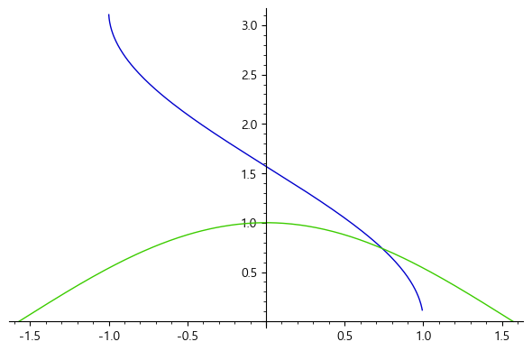
정의. 역탄젠트함수(arctangent function)
\(\tan x\)의 정의역을 \(\left (- \dfrac{ \pi }{2 } ,\dfrac{\pi }{2} \right )\)로 제한하면 일대일 함수가 되고 역함수가 존재한다.
역탄젠트함수는 다음과 같이 정의한다.
\[y=\tan ^ {-1} x \text{ 는 } \tan y=x \text{ 이고 } -\dfrac{\pi }{2} <y < \dfrac{\pi }{2}\]
를 만족하는 함수이다.
역탄젠트함수의 정의로부터
\(\tan (\tan ^ {-1} x)=x\), \(x \in (-\infty , \infty )\)이고 \(\tan ^ {-1} (\tan x)=x\), \(x \in \left (-\dfrac{\pi }{2}, \dfrac{\pi }{2}\right )\)임을 알 수 있다.
유사한 방법으로 다른 삼각함수의 역함수를 다음과 같이 정의할 수 있다.
정의. 역코시컨트함수, 역시컨트함수, 역탄젠트함수
• 역시컨트함수 \(y=\sec ^ {-1} x ~( x \in (-\infty , -1 ] \cup [1, \infty ) )\)는
$ y=x $이고 \(y \in \left [0, \dfrac{ \pi }{2 }\right ) \cup \left ( \dfrac{ \pi }{ 2}, \pi \right ]\)
를 만족하는 함수이다.
• 역코시컨트함수 \(y=\csc ^ {-1} x ~( x \in (-\infty , -1 ] \cup [1, \infty ) )\)는
\(\qquad \qquad \csc y=x\)이고 \(y \in \left [-\dfrac{\pi }{2} , 0 \right ) \cup \left (0, \dfrac{ \pi }{ 2} \right ]\)
를 만족하는 함수이다.
• 역코탄젠트함수 \(y=\cot ^ {-1} x ~(x \in (-\infty , \infty ))\)는
\(\qquad \qquad \cot y=x\)이고 \(y \in (0, \pi )\)
를 만족하는 함수이다.
예제
\(\sin ^ {-1} \left ( \dfrac{ 1}{ 2}\right )\)을 계산하여라.
(풀이)\(\sin ^ {-1} \left ( \dfrac{ 1}{ 2}\right )=x\)로 두면 \(-\dfrac{ \pi }{2 } \leq x \leq \dfrac{ \pi }{ 2}\)이다. 역함수의 성질에 의해 \(\sin x = \dfrac{ 1}{2 }\)이고 주어진 범위 내에서 \(x= \dfrac{ \pi }{6 }\)가 된다. 그러므로 \(\sin ^ {-1} \left ( \dfrac{ 1}{ 2}\right )= \dfrac{ \pi }{ 6}\)이다.■
reset(); load('ch1.sage')
s='asin(1/2)'
TrigEval(s);(123456)^30556373003462553278521277665419333757914477429707861621164878013831986527054745197804565133259323738549131155563320488179330998057446584571938059401035776예제
\(\sin \left [ 2\sin ^ {-1} \left ( - \dfrac{2}{3} \right ) \right ]\)을 계산하여라.
(풀이)
\(\sin ^ {-1} \left (- \dfrac{ 2}{3 }\right )=x\)로 두고 \(\sin 2x\)값을 계산하면 된다. \(-\dfrac{ \pi }{ 2} \leq x \leq \dfrac{ \pi }{2 }\)인 범위 내에서
\(\sin x =- \dfrac{ 2}{3 }\)이고 4사분면에 직각삼각형을 이용하게 되면 \(\cos x= \dfrac{ \sqrt { 5} }{ 3}\)이다.
그러므로 \(\sin \left [2 \sin ^ {-1} \left (- \dfrac{ 2}{3 }\right ) \right ]=\sin 2x=2\sin x \cos x=2\left (- \dfrac{2}{3}\right )\left ( \dfrac{ \sqrt { 5} }{3 }\right )\)\(=- \dfrac{ 4 \sqrt { 5} }{ 9}\)이다.■
s='sin(2*asin(-2/3))'
TrigEval(s);s='asin(1/sqrt(2))'
TrigEval(s);예제
\(\cos ^ {-1} \left (- \dfrac{ 1}{ 2}\right )\)을 계산하여라.
(풀이)\(\cos ^ {-1} \left (- \dfrac{ 1}{ 2}\right )=x\)로 두면 \(0 \leq x \leq \pi\)이다. 역함수의 성질에 의해 \(\cos x =- \dfrac{ 1}{2 }\)이고 \(x= \dfrac{ 2}{3 }\pi\)이다. 그러므로 \(\cos ^ {-1} \left (- \dfrac{ 1}{ 2}\right )= \dfrac{ 2}{3}\pi\)이다.■
s='acos(-1/2)'
TrigEval(s);예제
\(\cos \left [\cos ^ {-1} \left (-\dfrac{ 4}{5 }\right ) +\sin ^ {-1} \left (- \dfrac{ 12}{ 13}\right ) \right ]\)을 계산하여라.
(풀이)\(\cos ^ {-1} \left (- \dfrac{ 4}{5 }\right )=x\), \(\sin ^ {-1} \left (- \dfrac{ 12}{ 13}\right )=y\)로 두고 \(\cos (x+y)\)값을 구하면 된다.
\(0\leq x \leq \pi\)이고 \(-\dfrac{ \pi }{2 } \leq y \leq \dfrac{ \pi }{ 2}\)이며 삼각비를 잘 이용하면
\(\cos (x+y)=\cos x \cos y-\sin x \sin y=\left (- \dfrac{ 4}{5 }\right ) \dfrac{ 5}{ 13}- \dfrac{ 3}{5 }\left (- \dfrac{ 12}{ 13}\right )= \dfrac{ 16}{ 65}\)이다.■
s = 'cos(acos(-4/5)+asin(-12/13))'
TrigEval(s);(123456)**30556373003462553278521277665419333757914477429707861621164878013831986527054745197804565133259323738549131155563320488179330998057446584571938059401035776예제 10
\(\tan ^ {-1} (-1)\)을 계산하여라.
(풀이)\(\tan ^ {-1} ( -1)=x\)로 두면 \(-\dfrac{\pi }{2} < x < \dfrac{ \pi }{2}\)이다. 역함수의 성질에 의해 \(\tan x = -1\)이고 \(x= -\dfrac{ \pi }{4 }\)이므로 \(\tan ^ {-1} (-1)= -\dfrac{ \pi }{ 4}\)이다.■
s= 'acot(-1)'
TrigEval(s);예제
다음 역삼각함수 값을 구하여라.
$ ^ {-1} (-2) \((2)\) ^ {-1} (-1) $
\(\csc ^ {-1} \left ( \dfrac{2}{\sqrt {3}} \right )\)
(풀이)(1) \(\sec ^ {-1} \left ( -2 \right ) =x\)라 두면 \(x \in \left [ 0, \dfrac{\pi }{2} \right ) \cup \left ( \dfrac{\pi }{2} , \pi \right ]\)이고 이 범위 내에서 \(\sec x=-2\)을 만족하는
\(x\)를 찾으면 된다. 그러므로 \(\sec ^ {-1} (-2)= \dfrac{2}{3} \pi\)이다.
\(\cot ^ {-1} (-1)=y\)라 두면 \(y \in (0,\pi )\)이고 이 범위 내에서 \(\cot y=-1\)을 만족하는 \(y\)를 찾으면 \(y= \dfrac{ 3}{4 }\pi\)이고 \(\cot ^ {-1} (-1)= \dfrac{ 3}{4 }\pi\)이다.
\(\csc ^ {-1} \left ( \dfrac{2}{\sqrt {3}} \right )=t\)라 두면 \(t \in \left [ - \dfrac{ \pi }{2 } ,0 \right ) \cup \left (0, \dfrac{ \pi }{ 2} \right ]\)이고 이 범위 내에서 \(\csc t= \dfrac{ 2}{ \sqrt { 3} }\)을 만족하는 \(t\)를 찾으면 \(t= \dfrac{ \pi }{ 3}\)이고 \(\csc ^ {-1} \left ( \dfrac{2}{\sqrt {3}} \right )= \dfrac{ \pi }{3 }\)이다.■
s='asec(-2)'
TrigEval(s);s='acot(-1)'
TrigEval(s);s='acsc(2/sqrt(3))'
TrigEval(s);s='tan(asec(2))'
TrigEval(s);s = 'tan(atan(-3/5)+acos(-sqrt(2)/2))'
TrigEval(s);s= '2*atan(1/3) - atan(-1/7) '
TrigEval(s);#뉴턴의 서펜타인 serpentine - 책교정필요 p.51
s= '2*sin(2*atan(x))'
TrigEval(s);s= '2*sin(2*atan(-2))'
TrigEval(s);s= 'cos(2*asec(x))'
TrigEval(s);지수함수를 이용하여
\[\sinh x =\frac{e^x - e^{-x}}2,\qquad \cosh x=\frac{e^x + e^{-x}}2 \]
으로 정의된 함수들을 각각 쌍곡사인함수, 쌍곡코사인함수라고 하며, 이를 바탕으로
\[ \tanh x = \frac{\sinh x}{\cosh x}, \quad \coth x = \frac{\cosh x}{\sinh x}, \quad \text{sech} x = \frac{1}{\cosh x}, \quad \text{csch} x = \frac{1}{\sinh x} \]
등의 쌍곡함수를 얻는다.
쌍곡사인함수와 쌍곡코사인함수의 도함수는 다음
\[\begin{align} &\frac d{dx}\sinh x =\frac{e^x+e^{-x}}2=\cosh x\\ &\frac d{dx}\cosh x =\frac{e^x-e^{-x}}2=\sinh x \end{align}\]
과 같이 바로 구할 수 있다. 또한, 관계식
\[\sinh(-x)=-\sinh x,\ \cosh(-x)=\cosh x\]
로부터 알 수 있는 대칭성을 이용하여 그 그래프를 그릴 수 있다.
plot(sinh(x), (x,-pi/2,pi/2))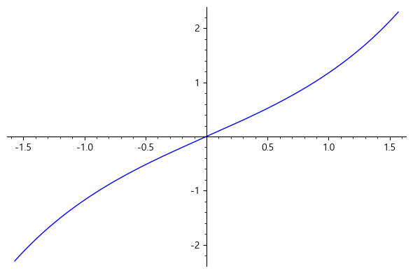
plot(cosh(x), (x,-pi,pi), ymin=0, ymax=9)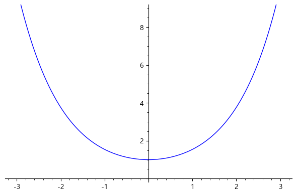
위의 그래프에서 알 수 있듯이, 쌍곡사인함수는 일대일 함수이므로 역함수를 가진다. 이를 역쌍곡사인함수라고 하며 \(\sinh^{-1}\)로 표시한다.
간단한 이차방정식을 풀면 그 역함수를 구할 수 있는데, 역쌍곡사인함수는
\[\sinh^{-1} x= \ln (x+\sqrt{x^2+1}) \]
이다. 마찬가지로 \(x\ge 1\)의 범위에서 역쌍곡코사인함수도 구할 수 있는데,
\[\cosh^{-1} x= \ln (x+\sqrt{x^2-1}) \]
이다. 이 함수들의 도함수는
\[\begin{align} \frac d{dx}\sinh^{-1}x &=\frac 1{\sqrt{x^2+1}}\\ \frac d{dx}\cosh^{-1}x &=\frac 1{\sqrt{x^2-1}},\quad x>1\\ \end{align}\]
이다. 따라서 역쌍곡함수들은 무리함수의 적분, 즉 원시함수를 구하는 데에 요긴하게 쓰일 수 있다.
var('x y')
a=solve(y==(e^x -e^(-x))/2,x)
show(a)\(\sinh x,\tanh x\)는 일대일 함수이므로 각각 역함수가 존재하고 \(\cosh x\)은 정의역을 \([0, \infty )\)로 제한하면 역함수가 존재한다. 쌍곡삼각함수들이 지수함수에 의해 정의되므로 역함수는 다음과 같이 표현된다.
정의. 쌍곡삼각함수의 역함수
쌍곡삼각함수의 역함수는 다음과 같다.
\[ y=\sinh ^ {-1} x~=\ln \left ( x+ \sqrt {x ^ {2} +1} \right ) ,~x \in {\mathbb R} ~\Leftrightarrow ~\sinh y=x \]
\[y=\cosh ^ {-1} x=\ln \left ( x+ \sqrt {x ^ {2} -1} \right ) ,~x \geq 1~ \Leftrightarrow ~\cosh y=x \text{ 이고 } y \geq 0\]
\[ y=\tanh ^ {-1} x= \dfrac{1}{2} \ln \left ( \dfrac{1+x}{1-x} \right ) ,~-1<x<1~ \Leftrightarrow ~\tanh y=x \]

plot(asinh(x), (x,-5,5))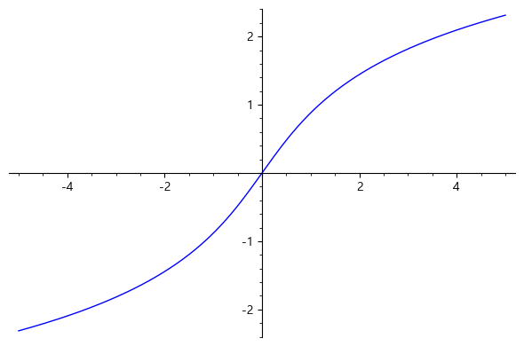
point((0,0))+plot(acosh(x), (x,1,5))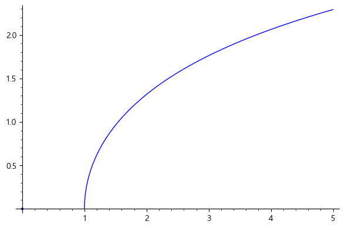
plot(atanh(x), (x,-1.,1.), aspect_ratio=1)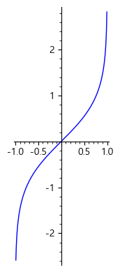
예제
\(\sinh ^ {-1} x~=\ln \left ( x+ \sqrt {x ^ {2} +1} \right )\)임을 증명하여라.
(풀이)\(y=\sinh ^ {-1} x\)라 놓으면 \(x=\sinh y= \dfrac{e ^ {y} -e ^ {-y}}{2}\)이다. 그러므로 \(2x=e ^ {y} -e ^ {-y}\)이고 양변에 \(e ^ {y}\)를 곱하면 \(2e ^ {y} x=e ^ {2y} -1\)이다. 마지막 식을 다시 정리하면 \((e ^ {y} ) ^ {2} -2x(e ^ {y} ) ^ {} -1=0\)인 이차방정식이 된다. 따라서 근의 공식에 의해서 \(e ^ {y} =x± \sqrt {x ^ {2} +1}\)이다. 그러나 \(e ^ {y} >0\)이므로
\(e ^ {y} =x+ \sqrt {x ^ {2} +1}\)이다. 그러므로 \(y=\ln \left ( x+ \sqrt {x ^ {2} +1}\right )\)이다.■
f(x)=ln(x+sqrt(1+x^2))
g(x)=sinh(x)
html( g(f(x)).simplify_trig().full_simplify() )html(cos(2*atan(x)).simplify_trig().full_simplify())